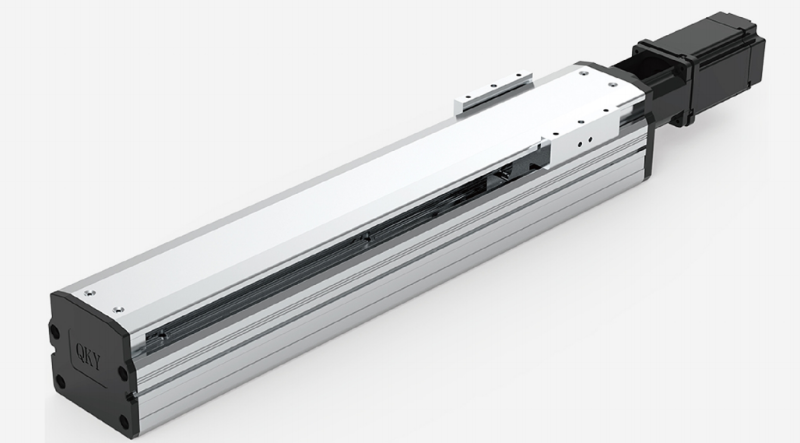
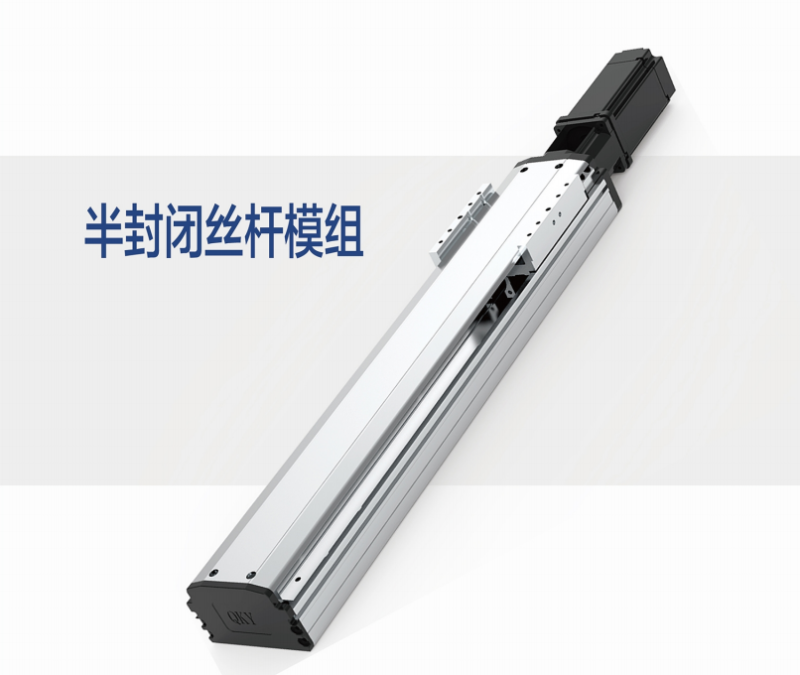
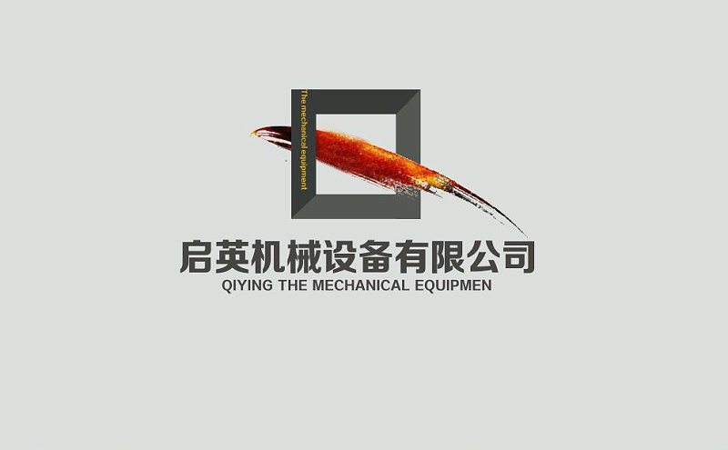

我们都知道机器设备使用了一段时间后，需要进行保养维修，其中有一项就是加润滑油，那么在使用直线导轨时，同样需要提供良好的润滑功能。如果在无润滑状态下使用，滚动部分就会更快地磨损，因而其使用寿命会缩短。

直线导轨加润滑油的注意事项
接下来我们了解一下，润滑剂具有哪些功效？
(1) 降低各运动部件之间的摩擦，从而可防止焦化及减少磨损。
(2) 在滚动面上形成油膜以减少作用于表面的应力，并延长滚动疲劳寿命。
(3) 将油膜覆盖于金属表面以防止生锈。
为充分发挥直线导轨的功能，请按照具体的使用条件提供润滑。即使是附有密封挡板的直线导轨，内部润滑剂也会在运行中逐渐渗漏出去。因此，系统需要根据使用条件以适当的时间间隔予以润滑。直线导轨主要采用油脂或滑动面用油作为其润滑剂。
润滑剂需要满足的要求一般包括下列内容∶
(1) 高油膜强度
(2) 低摩擦
(3) 高耐磨损性
(4) 高热稳定性
(5) 具备耐蚀性
(6) 高防锈性
(7) 粉尘和水分含量少
(8) 即使经过反复搅拌，油脂的稠度也不会发生显著的改变。

直线导轨加润滑油的注意事项
油脂润滑润滑时间间隔随使用条件和使用环境而不同。通常使用时，以每运行100km补充润滑脂为基准。正常情况下，应向直线运动系统上设置的油嘴或润滑孔补充相同类别的油脂。将不同类型的油脂混合，可能会出现使稠度提高等损坏系统性能的情况。
要求油润滑的直线导轨，交货时仅涂布了防锈油。订购时请指定要求的润滑油。如果直线导轨不是安装在水平方向上，钢球滚动面的部分区域油循环可能会不佳。因此，请务必正确使用关于直线导轨的安装方式。
●加油量随行程长度而变化。尤其对于长行程，可以增加润滑的频率或加油量，使得一直到行程末端都能在滚动面上形成油膜。
●在冷却剂喷溅的环境下，润滑油将会与冷却剂相混合，从而导致润滑剂被乳化或被冲走，这样就会显著地降低润滑性能。在这类场所，请使用高粘度及高抗乳化性的润滑剂，并调整润滑频率或加油量。

直线导轨加润滑油的注意事项
启英机械致力于成为研发、生产、销售于一体的专业传动厂家，本着“感恩他人，感恩客户”的经营理念，对内严抓产品品质，对外优化客户服务，不断提升品牌知名度和美誉度，模组品牌QKY于2016年研发、投产，现已成为是华南地区较具实力的传动元件服务商。
以贴心的服务为宗旨，大量的备库，精苛的检验，专职的服务工程师，保证能提供舒适的服务条件，让客户获得超出预期的服务价值。以满足客户需求为服务理念，坚持严苛的产品质量检测标准，坚守合理的价格，必将获得广大客户的信赖与支持，实现客户、员工和企业的多方共赢。
 扫一扫
扫一扫
启英机械
东莞市启英机械设备有限公司
地址：广东省东莞市寮步镇沿河南路11号松湖智谷科技产业园F2栋402室
备案号：粤ICP备2023126730号
邮箱：panjie@kee-qy.com